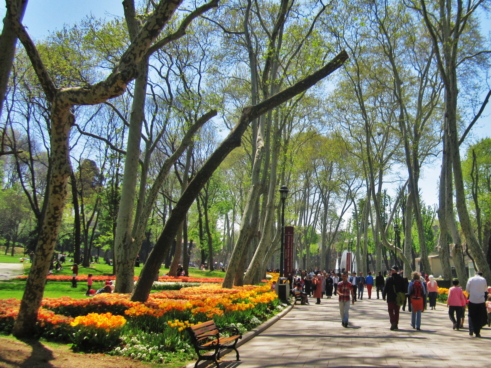
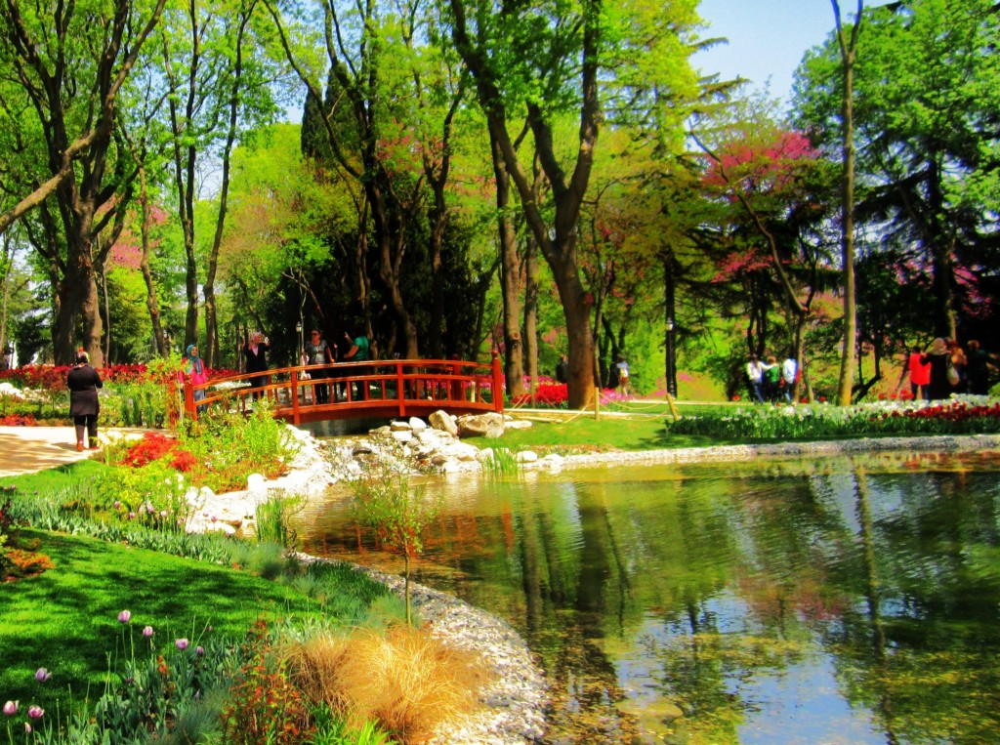
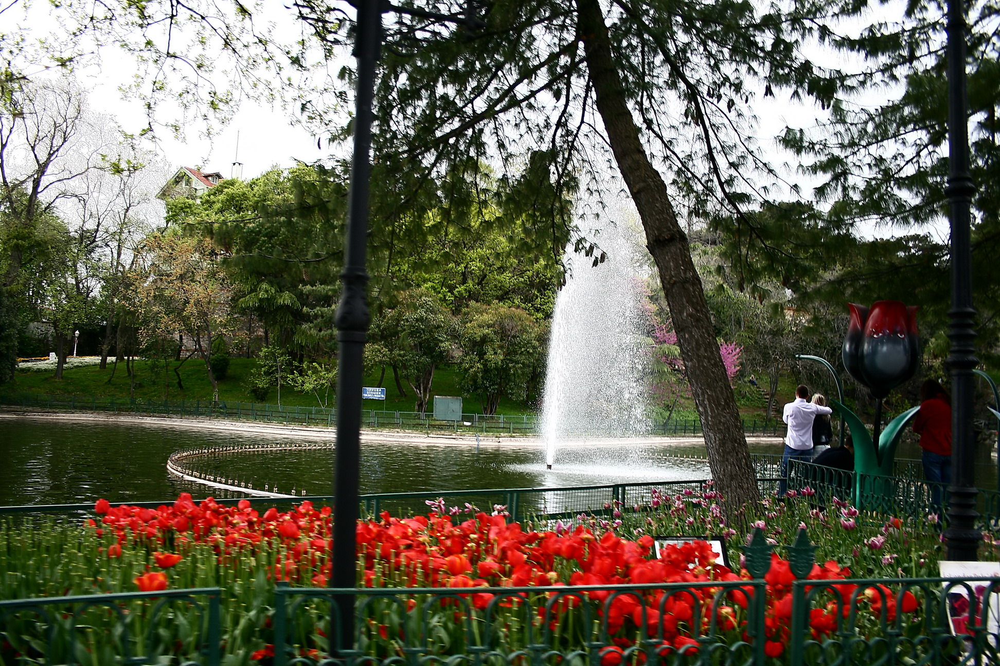
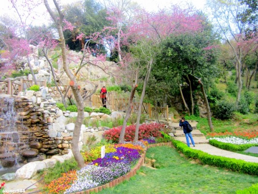

Gülhane Parkı
Gülhane Parkı, Osmanlı döneminde Topkapı Sarayı'nın has bahçelerinden biri olarak kullanılmaktaydı.
Döneminde, güllerle, lalelerle bir çok çiçekle bu bahçe süslenirken zamanla bakımı sekteye uğramış fakat günümüzde yeniden bakımı yapılıp, Türkiye'nin en büyük parklarından biri haline getirilmiştir.
Hafta içi ya da haftasonu çiçekler içinde, temiz hava ve doğayla başbaşa kalmak, aynı zamanda şehirden çok da uzaklaşmak istemiyorsanız,çay içmek ve parkı gezmek sizin için güzel bir alternatif olabilir.

Gülhane Parkı
Emirgan Korosu
Emirgân Korusu, İstanbul'da Sarıyer ilçesi'nde yer alan bir korudur.
Koru, 17. yüzyılda Osmanlı padişahı IV. Murad tarafından İranlı Emir Güne Han'a armağan edilmiştir.
Daha önce Feridun Bahçeleri olarak anılan bölge bundan sonra Emirgân Korusu olarak anılmaya başlanmıştır.
Yüzyıllar boyunca pek çok kez el değiştirmiş, 19. yüzyılda Osmanlı Padişahı Abdülaziz tarafından Mısır Hıdivi İsmail Paşa'ya verilmiştir.
1871-1878 yılları arasında koru içinde 3 köşk yaptırılmıştır. Günümüze de ulaşan bu köşkler Sarı Köşk, Pembe Köşk ve Beyaz Köşk olarak adlandırılmaktadır.
1940 yılında dönemin İstanbul belediye başkanı Lütfi Kırdar'ın girişimiyle kamulaştırılıp park olarak düzenlenerek halka açılmıştır.
2006 yılından itibaren her yıl Nisan ayında Lale Festivali düzenlenmektedir.

Emirgan Korosu
Yıldız Parkı
İstanbul'un, Beşiktaş İlçesinde yer alan tarihi park. Balmumcu'dan Ortaköy'e uzanan Palanga Caddesi kuzey ve doğu sınırını, Ortaköy'den Beşiktaş'a uzanan Çırağan Caddesi güney sınırını oluşturur.
Biri Palanga Caddesi, diğeri de Çırağan Caddesi üzerinde olmak üzere iki ayrı kapısı olan Yıldız Parkı'nın içinde Malta köşkü ve Çadır Köşkü adı altında iki tane köşk vardır.
Osmanlı döneminde, özellikle 1600'lerin başlarında ön plana çıkmaya başladı. O zamanlar Kazancıoğlu Bahçesi adını taşıyan ve bu ailenin mülkü olan topraklar padişah IV. Murat tarafından satın alınarak kızı Kaya Sultan'a hediye edildi.
Lale Devri döneminde süsleme zevkine dayalı düzenlenen çırağan alemleri sırasında çeşitli eğlencelere mekân olmuştur. Duvarın deniz tarafındaki koruluk ve içindeki Çadır ve Malta Köşkleri ise İstanbul Belediyesi'ne verildi.
Önce Çırağan Sarayı'nın arka bahçesi, sonra da 1877'den itibaren genişletilmesine geçilen Yıldız Sarayı'nın dış koruluğu olan yeşillik, 1940'tan sonra Yıldız Parkı olarak adlandırıldı.

Yıldız Parkı
Fethi Paşa Korusu
Fethipaşa Korusu, İstanbul'un Üsküdar ilçesi, Paşalimanı bölgesinde bulunan, denize bakan bir korudur.
Kuzguncuk ve Sultantepe mahalleleri arasında yer alır. Koru adını, Osmanlı vezirlerinden Fethi Ahmet Paşa'dan almaktadır.
Uzun yıllar boyunca bakımsız kaldıktan sonra, yenilenmiş ve halka açık park hâline getirilmiştir.

Fethi Paşa Korusu